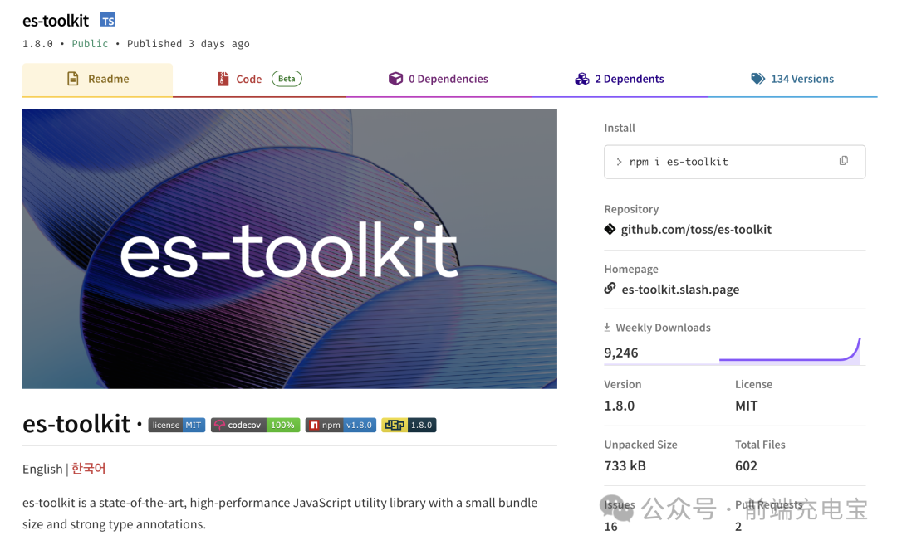
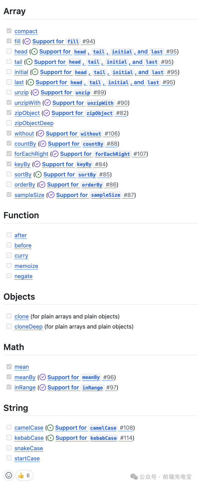

2024-07-10 21:45:24 · YinHao
本文来分享一个最近才开源的工具库：es-toolkit ，它是 Lodash 的现代替代品，相比于 Lodash，它的性能提升了2-3倍，而打包体积却减少了 97%。
es-toolkit 是一个多月前才开源的，目前其 npm 周下载量已经达到了 9000+，非常有潜力。
这个库完全使用 TypeScript 实现，因此提供了简单而强大的类型，并且经过了 100% 的测试，可以确保最大程度的稳健性。它还支持在所有 JavaScript 环境使用，包括 Node.js、Deno、Bun 和浏览器。
es-toolkit 的目标就是实现与 Lodash 的功能基本一致。 目前已经实现了一大部分功能，还在快速增加新功能中。
